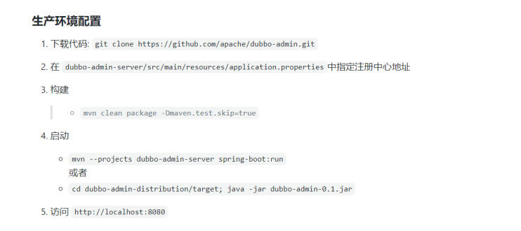

微服务 服务架构演变
单体架构
传统架构（单机系统），一个项目一个工程：比如商品、订单、支付、库存、登录、注册等等，统一部署，一个进程
all in one的架构方式，把所有的功能单元放在一个应用里。然后把整个应用部署到一台服务器上。如果负载能力不行，将整个应用进行水平复制，进行扩展，然后通过负载均衡实现访问。
Java实现：JSP、Servlet，打包成一个jar、war部署
易于开发和测试:也十分方便部署;当需要扩展时，只需要将war复制多份，然后放到多个服务器上，再做个负载均衡就可以了。
如果某个功能模块出问题，有可能全站不可访问，修改Bug后、某模块功能修改或升级后，需要停掉整个服务，重新整体重新打包、部署这个应用war包，功能模块相互之间耦合度高,相互影响,不适 合当今互联网业务功能的快速迭代。
特别是对于一个大型应用，我们不可能吧所有内容都放在一个应用里面，我们如何维护、如何分工合作都是问题。如果项目庞大，管理难度大
Web应用服务器：开源的tomcat、jetty、glassfish。商用的有weblogic、websphere、Jboss
微服务 1 https://www.martinfowler.com/microservices/
1 2 3 4 5 6 7 8 9 10 11 12 13 14 15 16 In short, the microservice architectural style is an approach to developing a single application as a suite of small services, each running in its own process and communicating with lightweight mechanisms, often an HTTP resource API. These services are built around business capabilities and independently deployable by fully automated deployment machinery. There is a bare minimum of centralized management of these services, which may be written in different programming languages and use different data storage technologies. 简而言之，微服务架构风格是一种将单个应用程序开发为一套小型服务的方法，每个服务都在自己的进程中运 行并与轻量级机制（通常是 HTTP 资源 API）进行通信。这些服务围绕业务功能构建，并可通过全自动部署 机制独立部署。对这些服务进行最低限度的集中管理，这些服务可能用不同的编程语言编写并使用不同的数据 存储技术。 -- James Lewis and Martin Fowler (2014) 亚马逊创始人 Jeff Bezos 说过一句话：“一个最好的团队用两个披萨可以喂饱”。 一个团队控制到6-10人左右
SOA 和微服务
SOA（Service Oriented Architecture）是由多个服务组成的分布式系统
各个子系统之间没有采用统一的通信标准,导致系统间通信与数据交互间变得异常复杂
各个服务之间通过ESB(Enterprise Service Bus)进行通信,ESB是一个由大量规则和原则集成的软件架构，可以将一系列不同的应用程序集成到单个基础架构中，但ESB成本超级高，没有好用的开源，被大厂绑架，此外ESB属于重量级产品，部署规划异常笨重
导致ESB的单点依赖和商业ESB的费用问题反而成为了所有服务的瓶颈
微服务属于SOA的子集,SOA可以认为面向服务的1.0版本,微服务可以认为是面向服务的2.0版本
微服务化的核心就是将传统的一站式应用，根据业务拆分成一个一个的服务，彻底去掉耦合，每一个微服务提供单个业务功能，一个服务只做一件事。每个服务都围绕着具体业务进行构建，并且能够被独立地部署到生产环境、类生产环境等
从技术角度讲就是一种小而独立的处理过程，类似与进程的概念，能够自行单独启动或销毁
微服务架构（分布式系统），各个模块/服务，各自独立出来，”让专业的人干专业的事”，独立部署。分布式系统中，不同的服务可以使用各自独立的数据库。
服务之间采用轻量级的通信机制（通常是基于HTTP的RESTful API）。
微服务设计的思想改变了原有的企业研发团队组织架构。传统的研发组织架构是水平架构，前端、后端、DBA、测试分别有自己对应的团队，属于水平团队组织架构。而微服务的设计思想对团队的划分有着一定的影响，使得团队组织架构的划分更倾向于垂直架构，比如用户业务是一个团队来负责，支付业务是一个团队来负责。但实际上在企业中并不会把团队组织架构拆分得这么绝对，垂直架构只是一种理想的架构
微服务的实现框架有多种，不同的应用架构，部署方式也有不同
单体架构和微服务比较
微服务的优缺点 微服务优点：
每个服务足够内聚，足够小，代码容易理解。这样能聚焦一个简单唯一的业务功能或业务需求。
开发简单、开发效率提高，一个服务可能就是专业的只干一件事，微服务能够被小团队单独开发，这个小团队可以是2到5人的开发人员组成
微服务是松耦合的，是有功能意义的服务，无论是在开发阶段或部署阶段都是独立的。
微服务能使用不同的语言开发
易于和第三方集成，微服务运行容易且灵活的方式集成自动部署，通过持续集成工具，如: Jenkins、Hudson、Bamboo
微服务易于被一个开发人员理解、修改和维护，这样小团队能够更关注自己的工作成果，无需通过合作才能体现价值
微服务允许你利用融合最新技术。微服务只是业务逻辑的代码，不会和HTML/CSS或其他界面组件混合，即前后端分离
每个微服务都有自己的存储能力，一般都有自己的独立的数据库，也可以有统一数据库
微服务缺点：
微服务把原有的一个项目拆分成多个独立工程，增加了开发、测试、运维、监控等的复杂度
微服务架构需要保证不同服务之间的数据一致性，引入了分布式事务和异步补偿机制，为设计和开发带来一定挑战
开发人员和运维需要处理分布式系统的复杂性，需要更强的技术能力
微服务适用于复杂的大系统，对于小型应用使用微服务，进行盲目的拆分只会增加其维护和开发成本
微服务技术栈
常见的微服务框架 Dubbo
阿里开源贡献给了ASF，目前已经是Apache的顶级项目
一款高性能的Java RPC服务框架，微服务生态体系中的一个重要组件
将单体程序分解成多个功能服务模块，模块间使用Dubbo框架提供的高性能RPC通信
内部协调使用 Zookeeper，实现服务注册、服务发现和服务治理
Spring cloud
一个完整的微服务解决方案，相当于Dubbo的超集
微服务框架，将单体应用拆分为粒度更小的单一功能服务
基于HTTP协议的REST(Representational State Transfer 表述性状态转移）风格实现模块间通信
微服务还是单体？ 1 2 https://martinfowler.com/bliki/MonolithFirst.html https://www.toutiao.com/article/7173261841408360990/?log_from=c8d3dfbf573b3_1670416613668
单体在绝大部分时候是更好的选择，即单体优先
在微服务大行其道的今天，其实已经有很多大师或者有务实的研发者已经意识到微服务在研发过程中，可能不是你想要的银弹，很多时候起到了反作用。
软件大师“Martin Fowler”在2015年就提出的“单体优先”（Monolith First）的思想。
Martin Fowler发现所有成功的微服务都遵循了通用的模式：
几乎所有成功的微服务故事，都是从一个变得太大而被分解的单体开始的。
几乎所有我听说过的从头开始构建为微服务系统的系统都以严重的麻烦告终。
这种模式导致Martin Fowler的许多同事认为：“你不应该用微服务开始一个新的项目，即使你确信你的应用程序将足够大，值得这么做…”
单体优先：
单体允许你探索系统的复杂性和组件的边界；
当复杂性增加时裂变出微服务；
当你边界和服务管理的业务知识增加时裂变出更多的微服务。
直接微服务:
直接使用微服务架构风险太大。
微服务是一种有用的架构，但即使是它们的拥护者也说使用它们会产生显著的“微服务附加费”，这意味着它们只对更复杂的系统有用。
这种附加费，本质上是管理一套服务的成本，将拖慢团队的速度，让使用单体应用成为更简单的选择。
这成为了“单体优先”策略的有力论证，即使你认为它可能会在以后从微服务架构中受益，你也应该在最初使用单体来构建应用。
通过先建立一个单体，你可以在使用微服务设计之前弄清楚什么是正确的边界。这也给了你时间来开发更好粒度的微服务。
单体优先策略一：模块化单体
合乎逻辑的方法是仔细设计一个单体应用，注意软件内部的模块化，包括 API 边界和数据存储方式。
做好这一点之后，从单体应用转向微服务是一件相对简单的事情。
单体优先策略二：边缘剥离
一种更常见的方法是从单体开始，逐渐剥离边缘的微服务。
这种方法可以在微服务架构的核心留下一个实质性的单体。
大多数新的开发都发生在微服务中，而单体是相对静止的。
单体优先策略三：整体替换
很少有人把这种做法看成是一种值得骄傲的做法，然而把单体作为一种牺牲性的架构来建造是有好处的。
不要害怕建造一个你会丢弃的单体应用，特别是如果一个单体应用能让你快速进入市场。
单体优先策略四：粗粒度服务
从几个粗粒度的服务开始，这些服务比你最终得到的微服务要大。
使用这些粗粒度的服务来习惯与多个服务一起工作。
同时享受这样一个事实，即这种粗粒度减少了你必须做的服务间重构的数量。
然后，随着边界的稳定，分解为更细粒度的服务。
“单体优先”的思想，目前已逐渐开始成为是业界普遍共识。现在已经属于后微服务时代!
在一个人数不多、资金不是无限充裕，需要快速将产品推向市场的团队，建议使用“单体优先”的实现方式。
在很多团队中，使用微服务其实是一种Hype Driven Development（炒作/简历驱动开发），不是为了真正为了解决业务问题。
使用“单体优先”，是一个务实的选择！试想如果是你自己创业，你会是选择“单体”还是“微服务”，那么请为你的企业进行务实的选择。
ZooKeeper ZooKeeper 介绍
ZooKeeper 的由来
下面这段内容摘自《从Paxos到Zookeeper 》第四章第一节的某段内容：
Zookeeper最早起源于雅虎研究院的一个研究小组。在当时，研究人员发现，在雅虎内部很多大型系统基本都需要依赖一个类似的系统来进行分布式协调，但是这些系统往往都存在分布式单点问题。所以，雅虎的开发人员就试图开发一个通用的无单点问题的分布式协调框架，以便让开发人员 将精力集中在处理业务逻辑上。
关于“ZooKeeper”这个项目的名字，其实也有一段趣闻。在立项初期，考虑到之前内部很多项目都是使用动物的名字来命名的（例如著名的Pig项目),雅虎的工程师希望给这个项目也取一个动物的名字。时任研究院的首席科学家RaghuRamakrishnan开玩笑地说：“在这样下去，我们这儿就变成动物园了！”此话一出，大家纷纷表示就叫动物园管理员吧——因为各个以动物命名的分布式组件放在一起，雅虎的整个分布式系统看上去就像一个大型的动物园了，而Zookeeper正好要用来进行分布式环境的协调——于是，Zookeeper的名字也就由此诞生了。
ZooKeeper 是一个开源的分布式协调服务，ZooKeeper框架最初是在“Yahoo!”上构建的，用于以简单而稳健的方式访问他们的应用程序。 后来，Apache ZooKeeper成为Hadoop，HBase和其他分布式框架使用的有组织服务的标准。 例如，Apache HBase使用ZooKeeper跟踪分布式数据的状态。ZooKeeper 的设计目标是将那些复杂且容易出错的分布式一致性服务封装起来，构成一个高效可靠的原语集，并以一系列简单易用的接口提供给用户使用。
ZooKeeper 是一个典型的分布式数据一致性解决方案，分布式应用程序可以基于 ZooKeeper 实现诸如数据发布/订阅、负载均衡、命名服务、分布式协调/通知、集群管理、Master 选举、分布式锁和分布式队列等功能。
Zookeeper 一个最常用的使用场景就是用于担任服务生产者和服务消费者的注册中心(提供发布订阅服务)。 服务生产者将自己提供的服务注册到Zookeeper中心，服务的消费者在进行服务调用的时候先到Zookeeper中查找服务，获取到服务生产者的详细信息之后，再去调用服务生产者的内容与数据。在Dubbo架构中 Zookeeper 就担任了注册中心这一角色。
官网:
1 https://zookeeper.apache.org/
官方文档:
1 https://zookeeper.apache.org/doc/
ZooKeeper 工作原理 ZooKeeper 是一个分布式服务框架，它主要是用来解决分布式应用中经常遇到的一些数据管理问题，如：命名服务、状态同步、配置中心、集群管理等。
ZooKeeper 功能 命名服务 命名服务是分布式系统中比较常见的一类场景。命名服务是分布式系统最基本的公共服务之一。在分布式系统中，被命名的实体通常可以是集群中的机器、提供的服务地址或远程对象等——这些我们都可以统称它们为名字（Name），其中较为常见的就是一些分布式服务框架（如RPC、RMI）中的服务地址列表，通过使用命名服务，客户端应用能够根据指定名字来获取资源的实体、服务地址和提供者的信息等。
Zookeeper 数据模型
1 2 3 4 5 6 7 在 Zookeeper 中，节点分为两类 第一类是指构成Zookeeper集群的主机，称之为主机节点 第二类则是指内存中zookeeper数据模型中的数据单元，用来存储各种数据内容，称之为数据节点 ZNode。 Zookeeper内部维护了一个层次关系(树状结构)的数据模型，它的表现形式类似于Linux的文件系统，甚至操 作的种类都一致。 Zookeeper数据模型中有自己的根目录(/)，根目录下有多个子目录，每个子目录后面有若干个文件,由斜杠 (/)进行分割的路径，就是一个ZNode,每个 ZNode上都会保存自己的数据内容和一系列属性信息.
状态同步 每个节点除了存储数据内容和 node 节点状态信息之外，还存储了已经注册的APP 的状态信息，当有些节点或APP不可用，就将当前状态同步给其他服务。
配置中心 现在我们大多数应用都是采用的是分布式开发的应用，搭建到不同的服务器上，我们的配置文件，同一个应用程序的配置文件一样，还有就是多个程序存在相同的配置，当我们配置文件中有个配置属性需要改变，需要改变每个程序的配置属性，这样会很麻烦的去修改配置，那么可用使用ZooKeeper 来实现配置中心
ZooKeeper 采用的是推拉相结合的方式：客户端向服务端注册自己需要关注的节点，一旦该节点的数据发生变更，那么服务端就会向相应的客户端发送Watcher事件通知，客户端接收到这个消息通知后，需要主动到服务端获取最新的数据。
Apollo（阿波罗）是携程框架部门研发的开源配置管理中心,此应用比较流行
集群管理 所谓集群管理，包括集群监控与集群控制两大块，前者侧重对集群运行时状态的收集，后者则是对集群进行操作与控制，在日常开发和运维过程中，我们经常会有类似于如下的需求：
希望知道当前集群中究竟有多少机器在工作。
对集群中每台机器的运行时状态进行数据收集。对集群中机器进行上下线操作。
ZooKeeper 具有以下两大特性:
客户端如果对ZooKeeper 的一个数据节点注册 Watcher监听，那么当该数据节点的内容或是其子节点列表发生变更时，ZooKeeper 服务器就会向已注册订阅的客户端发送变更通知。
对在ZooKeeper上创建的临时节点，一旦客户端与服务器之间的会话失效，那么该临时节点也就被自动清除。
Watcher（事件监听器）是 Zookeeper 中的一个很重要的特性。Zookeeper 允许用户在指定节点上注册一些Watcher，并且在一些特定事件触发的时候， ZooKeeper 服务端会将事件通知到感兴趣的客户端上去，该机制是 Zookeeper 实现分布式协调服务的重要特性。
ZooKeeper 服务流程
生产者启动
生产者注册至zookeeper
消费者启动并订阅频道
zookeeper 通知消费者事件
消费者调用生产者
监控中心负责统计和监控服务状态
ZooKeeper 单机部署 单机版的 ZooKeeper 安装
官方文档:
1 https://zookeeper.apache.org/doc/r3.6.2/zookeeperStarted.html#sc_InstallingSingleMode
配置 Java 环境 官方依赖介绍
1 2 https://zookeeper.apache.org/doc/r3.8.0/zookeeperAdmin.html#sc_systemReq https://zookeeper.apache.org/doc/r3.6.2/zookeeperAdmin.html#sc_requiredSoftware
1 2 3 4 5 [root@ubuntu1804 ~] [root@ubuntu1804 ~] openjdk version "1.8.0_282" OpenJDK Runtime Environment (build 1.8.0_282-8u282-b08-0ubuntu1~18.04-b08) OpenJDK 64-Bit Server VM (build 25.282-b08, mixed mode)
部署 ZooKeeper 包安装 范例：包安装
1 2 3 4 5 6 7 8 9 10 11 12 13 14 15 16 17 18 19 20 21 22 23 24 [root@ubuntu2204 ~] 正在列表... 完成 zookeeper/jammy 3.4.13-6ubuntu4 all [root@ubuntu2204 ~] [root@ubuntu2204 ~] tickTime=2000 initLimit=10 syncLimit=5 dataDir=/var/lib/zookeeper clientPort=2181 [root@ubuntu2204 ~] zkCleanup.sh zkCli.sh zkEnv.sh zkServer.sh [root@ubuntu2204 ~] ZooKeeper JMX enabled by default Using config: /etc/zookeeper/conf/zoo.cfg Starting zookeeper ... STARTED [root@ubuntu2204 ~] ZooKeeper JMX enabled by default Using config: /etc/zookeeper/conf/zoo.cfg Mode: standalone
二进制安装 历史版本下载
1 https://archive.apache.org/dist/zookeeper/
范例: 安装单机 zookeeper
1 2 3 4 5 6 7 8 9 10 11 12 13 14 15 16 17 18 19 20 21 22 23 24 [root@ubuntu1804 ~] [root@ubuntu1804 ~] [root@ubuntu1804 ~] [root@ubuntu1804 ~] [root@ubuntu1804 ~] [root@ubuntu1804 ~] [root@ubuntu1804 ~] [root@ubuntu1804 ~] tickTime=2000 initLimit=10 syncLimit=5 dataDir=/tmp/zookeeper clientPort=2181 autopurge.snapRetainCount=3 autopurge.purgeInterval=24
启动 ZooKeeper 1 2 3 4 5 6 7 8 9 10 11 12 13 [root@ubuntu1804 ~] [root@ubuntu1804 ~] [root@ubuntu1804 ~] /usr/bin/java ZooKeeper JMX enabled by default Using config: /usr/local/zookeeper/bin/../conf/zoo.cfg Starting zookeeper ... STARTED
验证 ZooKeeper 1 2 3 4 5 6 7 8 9 10 11 12 13 14 15 16 17 18 19 20 21 22 23 [root@ubuntu1804 ~] /usr/bin/java ZooKeeper JMX enabled by default Using config: /usr/local/zookeeper/bin/../conf/zoo.cfg Client port found: 2181. Client address: localhost. Client SSL: false . Mode: standalone [root@ubuntu1804 ~] LISTEN 0 50 *:2181 *:* users :(("java",pid=1041 ,fd=70 )) [root@ubuntu1804 ~] java(1041)─┬─{java}(1044) ├─{java}(1045) ├─{java}(1046) ├─{java}(1047) ├─{java}(1048) ├─{java}(1049) ├─{java}(1050) ├─{java}(1051) ├─{java}(1052) ├─{java}(1053) ├─{java}(1054) ├─{java}(1055)
一键安装 ZooKeeper 脚本 1 2 3 4 5 6 7 8 9 10 11 12 13 14 15 16 17 18 19 20 21 22 23 24 25 26 27 28 29 30 31 32 33 34 35 36 37 38 39 40 41 42 43 44 45 46 47 48 49 50 51 52 53 54 55 56 57 58 59 60 61 62 63 64 65 66 67 68 69 70 71 72 73 74 75 76 77 78 79 80 81 82 83 84 85 86 87 88 89 90 91 92 93 94 95 96 97 98 99 100 101 102 103 104 105 106 #!/bin/bash ZK_VERSION=3.8.1 ZK_URL=https://archive.apache.org/dist/zookeeper/zookeeper-${ZK_VERSION} /apache-zookeeper-${ZK_VERSION} -bin.tar.gz INSTALL_DIR=/usr/local/zookeeper HOST=`hostname -I|awk '{print $1}' ` . /etc/os-release color RES_COL=60 MOVE_TO_COL="echo -en \\033[${RES_COL} G" SETCOLOR_SUCCESS="echo -en \\033[1;32m" SETCOLOR_FAILURE="echo -en \\033[1;31m" SETCOLOR_WARNING="echo -en \\033[1;33m" SETCOLOR_NORMAL="echo -en \E[0m" echo -n "$1 " && $MOVE_TO_COL echo -n "[" if [ $2 = "success" -o $2 = "0" ] ;then ${SETCOLOR_SUCCESS} echo -n $" OK " elif [ $2 = "failure" -o $2 = "1" ] ;then ${SETCOLOR_FAILURE} echo -n $"FAILED" else ${SETCOLOR_WARNING} echo -n $"WARNING" fi ${SETCOLOR_NORMAL} echo -n "]" echo } install_jdk if [ $ID = 'centos' -o $ID = 'rocky' ];then yum -y install java-1.8.0-openjdk-devel || { color "安装JDK失败!" 1; exit 1; } else apt update apt install openjdk-11-jdk -y || { color "安装JDK失败!" 1; exit 1; } fi java -version } install_zookeeper if [ -f apache-zookeeper-${ZK_VERSION} -bin.tar.gz ] ;then cp apache-zookeeper-${ZK_VERSION} -bin.tar.gz /usr/local/src/ else wget -P /usr/local/src/ --no-check-certificate $ZK_URL || { color "下载失败!" 1 ;exit ; } fi tar xf /usr/local/src/${ZK_URL##*/} -C /usr/local ln -s /usr/local/apache-zookeeper-*-bin/ ${INSTALL_DIR} echo "PATH=${INSTALL_DIR} /bin:$PATH " > /etc/profile.d/zookeeper.sh . /etc/profile.d/zookeeper.sh mkdir -p ${INSTALL_DIR} /data cat > ${INSTALL_DIR} /conf/zoo.cfg <<EOF tickTime=2000 initLimit=10 syncLimit=5 dataDir=${INSTALL_DIR}/data clientPort=2181 maxClientCnxns=128 autopurge.snapRetainCount=3 autopurge.purgeInterval=24 EOF cat > /lib/systemd/system/zookeeper.service <<EOF [Unit] Description=zookeeper.service After=network.target [Service] Type=forking #Environment=${INSTALL_DIR} ExecStart=${INSTALL_DIR}/bin/zkServer.sh start ExecStop=${INSTALL_DIR}/bin/zkServer.sh stop ExecReload=${INSTALL_DIR}/bin/zkServer.sh restart [Install] WantedBy=multi-user.target EOF systemctl daemon-reload systemctl enable --now zookeeper.service systemctl is-active zookeeper.service if [ $? -eq 0 ] ;then color "zookeeper 安装成功!" 0 else color "zookeeper 安装失败!" 1 exit 1 fi } install_jdk install_zookeeper
ZooKeeper 集群部署 ZooKeeper 集群介绍 ZooKeeper集群用于解决单点和单机性能及数据高可用等问题。
集群结构
1 2 3 4 5 6 zookeeper集群基于Master/Slave的模型，处于主要地位(处理写操作)的主机称为Master(Leader)节 点，处于次要地位(处理读操作)的主机称为 slave节点，生产中读取的方式一般是以异步复制方式来实现的。 对于n台server,每个server都知道彼此的存在。只要有>n/2台server节点可用，整个zookeeper系统保持可用。 因此zookeeper集群通常由奇数台Server节点组成 当进行写操作时,由Master(leader)完成,并且同步到其它Slave(follower)节点,当在保证写操作在所有 节点的总数过半后,才会认为写操作成功
官方链接: 下图表示读的比例越高,性能越好
1 http://zookeeper.apache.org/doc/r3.7.0/zookeeperOver.html
集群角色
序号
角色
职责描述
1
领导者 (Leader)
负责处理写入请求的，事务请求的唯一调度和处理者,负责进行投票发起和决议，更新系统状态
2
跟随者 (Follower)
接收客户请求并向客户端返回结果，在选Leader过程中参与投票
3
观察者 (Observer)
转交客户端写请求给leader节点，和同步leader状态和Follower唯一区别就是不参与Leader投票,也不参与写操作的”过半写成功”策略
4
学习者 (Learner)
和leader进行状态同步的节点统称Learner，包括:Follower和Observer
5
客户端 (client)
请求发起方
选举过程 节点角色状态：
LOOKING：寻找 Leader 状态，处于该状态需要进入选举流程
LEADING：领导者状态，处于该状态的节点说明是角色已经是Leader
FOLLOWING：跟随者状态，表示 Leader已经选举出来，当前节点角色是follower
OBSERVER：观察者状态，表明当前节点角色是 observer
选举 ID：
ZXID（zookeeper transaction id）：每个改变 Zookeeper状态的操作都会形成一个对应的zxid。ZXID最大的节点优先选为Leader
myid：服务器的唯一标识(SID)，通过配置 myid 文件指定，集群中唯一,当ZXID一样时,myid大的节 点优先选为Leader
ZooKeeper 集群选举过程：
当集群中的 zookeeper 节点启动以后，会根据配置文件中指定的 zookeeper节点地址进行leader 选择操作，过程如下：
每个zookeeper 都会发出投票，由于是第一次选举leader，因此每个节点都会把自己当做leader角色进行选举，每个zookeeper 的投票中都会包含自己的myid和zxid，此时zookeeper 1 的投票为myid为 1，初始zxid有一个初始值0x0，后期会随着数据更新而自动变化，zookeeper2 的投票为myid为2，初始zxid 为初始生成的值。
每个节点接受并检查对方的投票信息，比如投票时间、是否状态为LOOKING状态的投票。
对比投票，优先检查zxid，如果zxid 不一样则 zxid 大的为leader，如果zxid相同则继续对比myid，myid 大的一方为 leader
成为 Leader 的必要条件： Leader 要具有最高的zxid；当集群的规模是 n 时，集群中大多数的机器（至少n/2+1）得到响应并follower 选出的 Leader。
心跳机制：Leader 与 Follower 利用 PING 来感知对方的是否存活，当 Leader无法响应PING 时，将重新发起 Leader 选举。
当 Leader 服务器出现网络中断、崩溃退出与重启等异常情况时，ZAB(Zookeeper Atomic Broadcast)协议就会进入恢复模式并选举产生新的Leader服务器。这个过程大致如下：
Leader Election（选举阶段）：节点在一开始都处于选举阶段，只要有一个节点得到超半数节点的票数，它就可以当选准 leader。
Discovery（发现阶段）：在这个阶段，followers 跟准 leader 进行通信，同步 followers 最近接收的事务提议。
Synchronization（同步阶段）:同步阶段主要是利用 leader 前一阶段获得的最新提议历史，同步集群中所有的副本。同步完成之后 准 leader 才会成为真正的 leader。
Broadcast（广播阶段） ：到了这个阶段，Zookeeper 集群才能正式对外提供事务服务，并且leader 可以进行消息广播。同时如果有新的节点加入，还需要对新节点进行同步
ZAB 协议介绍
1 2 3 ZAB（ZooKeeper Atomic Broadcast 原子广播） 协议是为分布式协调服务 ZooKeeper 专门设计的一 种支持崩溃恢复的原子广播协议。 在 ZooKeeper 中，主要依赖 ZAB 协议来实现分布式数据一致性，基于 该协议，ZooKeeper 实现了一种主备模式的系统架构来保持集群中各个副本之间的数据一致性。
ZooKeeper 集群特性 整个集群中只要有超过集群数量一半的 zookeeper工作是正常的，那么整个集群对外就是可用的
假如有 2 台服务器做了一个 Zookeeper 集群，只要有任何一台故障或宕机，那么这个 ZooKeeper集群就不可用了，因为剩下的一台没有超过集群一半的数量，但是假如有三台zookeeper 组成一个集群， 那么损坏一台就还剩两台，大于 3台的一半，所以损坏一台还是可以正常运行的，但是再损坏一台就只剩一台集群就不可用了。那么要是 4 台组成一个zookeeper集群，损坏一台集群肯定是正常的，那么损坏两台就还剩两台，那么2台不大于集群数量的一半，所以 3 台的 zookeeper 集群和 4 台的 zookeeper集群损坏两台的结果都是集群不可用，以此类推 5 台和 6 台以及 7 台和 8台都是同理
另外偶数节点可以会造成”脑裂”现象,所以这也就是为什么集群一般都是奇数的原因。
ZooKeeper 集群部署 官方文档:
1 https://zookeeper.apache.org/doc/r3.6.2/zookeeperAdmin.html#sc_zkMulitServerSetup
环境准备 1 2 3 4 5 6 7 8 9 zookeeper-node1.wang.org 10.0.0.101 zookeeper-node2.wang.org 10.0.0.102 zookeeper-node3.wang.org 10.0.0.103 [root@zookeeper-node1 ~] [root@zookeeper-node2 ~] [root@zookeeper-node3 ~]
在所有节点下载并解压缩 ZooKeeper 包文件 1 2 3 4 5 6 7 8 9 [root@zookeeper-node1 ~] [root@zookeeper-node1 ~] [root@zookeeper-node1 ~] [root@zookeeper-node1 ~] [root@zookeeper-node1 ~]
准备配置文件 1 2 3 4 5 6 7 8 9 10 11 12 13 14 15 16 17 18 19 20 21 22 23 24 25 26 27 [root@zookeeper-node1 ~] [root@zookeeper-node1 ~] [root@zookeeper-node1 ~] [root@zookeeper-node1 ~] tickTime=2000 initLimit=10 syncLimit=5 dataDir=/usr/local/zookeeper/data clientPort=2181 maxClientCnxns=128 autopurge.snapRetainCount=3 autopurge.purgeInterval=24 server.1=10.0.0.101:2888:3888 server.2=10.0.0.102:2888:3888 server.3=10.0.0.103:2888:3888 [root@zookeeper-node1 ~] [root@zookeeper-node1 ~]
在各个节点生成ID文件 注意: 各个myid文件的内容要和zoo.cfg文件相匹配
1 2 3 [root@zookeeper-node1 ~] [root@zookeeper-node2 ~] [root@zookeeper-node3 ~]
各服务器启动 zookeeper 1 2 3 4 5 6 7 [root@zookeeper-node1 ~] [root@zookeeper-node2 ~] [root@zookeeper-node3 ~] [root@zookeeper-node1 ~]
查看集群状态 1 2 3 4 5 6 7 8 9 10 11 12 13 14 15 16 17 18 19 20 21 22 23 24 25 26 27 28 29 30 31 32 [root@zookeeper-node1 ~] /usr/bin/java ZooKeeper JMX enabled by default Using config: /usr/local/zookeeper/bin/../conf/zoo.cfg Client port found: 2181. Client address: localhost. Client SSL: false . Mode: follower [root@zookeeper-node1 ~] LISTEN 0 50 [::ffff:10.0.0.101]:3888 *:* [root@zookeeper-node2 ~] /usr/bin/java ZooKeeper JMX enabled by default Using config: /usr/local/zookeeper/bin/../conf/zoo.cfg Client port found: 2181. Client address: localhost. Client SSL: false . Mode: leader [root@zookeeper-node2 ~] LISTEN 0 50 [::ffff:10.0.0.102]:3888 *:* LISTEN 0 50 [::ffff:10.0.0.102]:2888 *:* [root@zookeeper-node3 ~] /usr/bin/java ZooKeeper JMX enabled by default Using config: /usr/local/zookeeper/bin/../conf/zoo.cfg Client port found: 2181. Client address: localhost. Client SSL: false . Mode: follower [root@zookeeper-node3 ~] LISTEN 0 50 [::ffff:10.0.0.103:3888 *:*
客户端访问 命令行客户端访问 ZooKeeper 1 2 3 4 5 6 7 8 9 10 11 12 13 14 15 16 17 18 19 20 21 22 23 24 25 26 27 28 29 30 31 32 33 34 35 36 37 38 39 40 41 42 43 44 45 46 47 48 49 50 51 [root@zookeeper-node1 ~] [zk: 10.0.0.103:2181(CONNECTED) 0] ls / [zookeeper] [zk: 10.0.0.103:2181(CONNECTED) 1] addWatch addauth close config connect create delete deleteall delquota get getAcl getAllChildrenNumber getEphemerals history listquota ls printwatches quit reconfig redo removewatches set setAcl setquota stat sync version [zk: 10.0.0.103:2181(CONNECTED) 1] version ZooKeeper CLI version: 3.6.2--803c7f1a12f85978cb049af5e4ef23bd8b688715, built on 09/04/2020 12:44 GMT [zk: 10.0.0.103:2181(CONNECTED) 2] create /app1 "hello,zookeeper" Created /app1 [zk: 10.0.0.103:2181(CONNECTED) 3] ls / [app1, zookeeper] [zk: 10.0.0.103:2181(CONNECTED) 4] get /app1 hello,zookeeper [zk: 10.0.0.103:2181(CONNECTED) 5] set /app1 "hello,linux" [zk: 10.0.0.103:2181(CONNECTED) 6] get /app1 hello,linux [zk: 10.0.0.103:2181(CONNECTED) 7] delete /app1 [zk: 10.0.0.103:2181(CONNECTED) 8] ls / [zookeeper] [zk: 10.0.0.103:2181(CONNECTED) 9] stat /zookeeper zxid = Ox0 ctime = Thu Jan 01 08:00:00 CST 1970 mzxid = Ox0 mtime = Thu Jan 01 08:00:00 cST 1970 pzxid = Ox0 cversion = -1 dataversion = 0 aclversion = o ephemera10wner = Ox0 dataLength = 0 numchi1dren = 1 [zk: 10.0.0.103:2181(CONNECTED) 10] quit
nc 访问 ZooKeeper ZooKeeper支持某些特定的四字命令字母与其的交互。它们大多是查询命令，用来获取 ZooKeeper服务的当前状态及相关信息。用户在客户端可以通过 netcat 或telnet向zookeeper发送下面命令
常见命令列表
1 2 3 4 5 6 7 8 9 10 11 12 13 14 15 conf cons envi dump stat ruok mntr reqs wchs wchc wchp srvr srst kill isro
命令的安全限制
1 2 3 4 5 6 7 8 9 10 11 xxx is not executed because it is not in the whitelist. 4lw.commands.whitelist=* 4lw.commands.whitelist=stat ，ruok，conf，isro
范例:
1 2 3 4 5 6 7 8 9 10 11 12 13 14 15 16 17 18 19 20 21 22 23 24 25 26 27 ubuntu18.04安装netcat echo stat | nc 127.0.0.1 2181echo conf | nc 127.0.0.1 2181echo envi | nc 127.0.0.1 2181echo cons | nc 127.0.0.1 2181echo dump | nc 127.0.0.1 2181[root@ubuntu1804 ~] Trying 10.0.0.8... Connected to 10.0.0.8. Escape character is '^]' . cons /10.0.0.100:52154[0](queued=0,recved=1,sent=0) /127.0.0.1:59566[1] (queued=0,recved=8,sent=8,sid=0x100004b74080001,lop=PING,est=1635560454029,to=30000,lcxid=0x0,lzxid=0x9,lresp=5205692,llat=0,minlat=0,avglat=0,maxlat=2) Connection closed by foreign host.
图形化客户端 ZooInspector github链接
1 2 https://github.com/zzhang5/zooinspector https://gitee.com/lbtooth/zooinspector.git
Linux 客户端 编译 zooinspector 注意：此软件因年代久远不再更新，当前只支持在Ubuntu18.04和Rocky8编译安装,不支持更高版本，如Ubuntu20.04等
1 2 3 4 5 6 7 8 9 10 Build $git clone https://github.com/zzhang5/zooinspector.git$cd zooinspector/$mvn clean package -Dmaven.test.skip=true Run $chmod +x target/zooinspector-pkg/bin/zooinspector.sh$target /zooinspector-pkg/bin/zooinspector.sh
范例: 编译 zooinspector
1 2 3 4 5 6 7 8 9 10 11 12 13 14 15 16 17 18 19 20 21 22 [root@zookeeper-node1 ~] [root@zookeeper-node1 ~] [root@zookeeper-node1 ~] [root@zookeeper-node1 zooinspector] [root@zookeeper-node1 zooinspector] <mirrors> <!--阿里云镜像--> <mirror> <id >nexus-aliyun</id> <mirrorOf>*</mirrorOf> <name>Nexus aliyun</name> <url>http://maven.aliyun.com/nexus/content/groups/public</url> </mirror> </mirrors> [root@zookeeper-node1 zooinspector]
客户端使用 1 2 3 4 5 6 7 8 9 10 [root@zookeeper-node1 zooinspector] pom.xml README.md src target [root@zookeeper-node1 zooinspector] 7.3M . [root@zookeeper-node1 zooinspector] [root@zookeeper-node1 zooinspector]
Windows 客户端使用 先下载并安装 JDK
注意: Oracle官网需要登录才能下载
1 https://www.oracle.com/java/technologies/javase/javase-jdk8-downloads.html
运行下面命令
1 2 3 D:\>java -jar zookeeper-dev-ZooInspector.jar
Python 访问 ZooKeeper 1 2 3 4 5 6 7 8 9 10 11 12 13 14 15 16 [root@zookeeper-node1 ~] [root@zookeeper-node1 ~] from kazoo.client import KazooClient zk = KazooClient(hosts='10.0.0.101:2181' ) zk.start() zk.create('/zkapp/test' ,b'this is a test' ,makepath=True) data=zk.get('/zkapp/test' ) print (data)zk.stop() [root@zookeeper-node1 ~] [root@zookeeper-node1 ~]
Kafka 消息队列简介 MQ 定义 1 2 #阿里云消息队列 https://www.aliyun.com/product/ons?spm=5176.234368.h2v3icoap.427.2620db25lcHi1Q&aly_as=Tz_Lue_o
在分布式场景中，相对于大量的用户请求来说，内部的功能主机之间、功能模块之间等，数据传递的数据量是无法想象的，因为一个用户请求，会涉及到各种内部的业务逻辑跳转等操作。那么，在大量用户的业务场景中，如何保证所有的内部业务逻辑请求都处于稳定而且快捷的数据传递呢? 消息队列(Message Queue)技术可以满足此需求
消息队列（Message Queue，简称 MQ）是构建分布式互联网应用的基础设施，通过 MQ 实现的松耦合架构设计可以提高系统可用性以及可扩展性，是适用于现代应用的最佳设计方案。
消息队列是一种异步的服务间通信方式，适用于无服务器和微服务架构。消息在被处理和删除之前一直存储在队列上。每条消息仅可被一位用户处理一次。消息队列可被用于分离重量级处理、缓冲或批处理工作以及缓解高峰期工作负载。
MQ 使用场合
消息队列作为高并发系统的核心组件之一，能够帮助业务系统结构提升开发效率和系统稳定性
消息队列主要有以下应用场景
削峰填谷
诸如电商业务中的秒杀、抢红包、企业开门红等大型活动时皆会带来较高的流量脉冲，或因没做相应的保护而导致系统超负荷甚至崩溃，或因限制太过导致请求大量失败而影响用户体验，消息队列可提供削峰填谷的服务来解决该问题。
异步解耦
交易系统作为淘宝等电商的最核心的系统，每笔交易订单数据的产生会引起几百个下游业务系统的关注，包括物流、购物车、积分、流计算分析等等，整体业务系统庞大而且复杂，消息队列可实现异步通信和应用解耦，确保主站业务的连续性。
顺序收发
细数日常中需要保证顺序的应用场景非常多，例如证券交易过程时间优先原则，交易系统中的订单创建、支付、退款等流程，航班中的旅客登机消息处理等等。与先进先出FIFO（First In First Out）原理类似，消息队列提供的顺序消息即保证消息FIFO。
分布式事务一致性
交易系统、支付红包等场景需要确保数据的最终一致性，大量引入消息队列的分布式事务，既可以实现系统之间的解耦，又可以保证最终的数据一致性。
大数据分析
数据在“流动”中产生价值，传统数据分析大多是基于批量计算模型，而无法做到实时的数据分析，利用消息队列与流式计算引擎相结合，可以很方便的实现业务数据的实时分析。
分布式缓存同步
电商的大促，各个分会场琳琅满目的商品需要实时感知价格变化，大量并发访问数据库导致会场页面响应时间长，集中式缓存因带宽瓶颈，限制了商品变更的访问流量，通过消息队列构建分布式缓存，实时通知商品数据的变化
蓄流压测
线上有些链路不方便做压力测试，可以通过堆积一定量消息再放开来压测
主流 MQ 目前主流的消息队列软件有 Kafka、RabbitMQ、ActiveMQ、RocketMQ等，还有相对小众的消息队列软件如ZeroMQ、Apache Qpid 等。
Kafka 介绍
阿里云消息队列
1 https://www.aliyun.com/product/ons?spm=5176.234368.h2v3icoap.427.2620db25lcHi1Q&aly_as=Tz_Lue_o
Kafka 被称为下一代分布式消息系统，由 Scala 和 Java编写，是非营利性组织ASF(Apache Software Foundation)基金会中的一个开源项目，比如:HTTP Server、Tomcat、Hadoop、ActiveMQ等开源软件都属于 Apache基金会的开源软件，类似的消息系统还有RabbitMQ、ActiveMQ、ZeroMQ。
Kafka用于构建实时数据管道和流应用程序。 它具有水平可伸缩性，容错性，快速性，可在数千家组织中同时投入生产协同工作。
官网: http://kafka.apache.org/
常用消息队列对比 kafka 最主要的优势是其具备分布式功能、并可以结合 zookeeper 可以实现动态扩容，Kafka 是一种高吞吐量的分布式发布订阅消息系统。
Kafka 特点和优势
特点
分布式: 多机实现,不允许单机
分区: 一个消息.可以拆分出多个，分别存储在多个位置
多副本: 防止信息丢失，可以多来几个备份
多订阅者: 可以有很多应用连接kafka
Zookeeper: 早期版本的Kafka依赖于zookeeper， 2021年4月19日Kafka 2.8.0正式发布，此版本包括了很多重要改动，最主要的是kafka通过自我管理的仲裁来替代ZooKeeper，即Kafka将不再需要ZooKeeper！
优势
Kafka通过 O(1)的磁盘数据结构提供消息的持久化，这种结构对于即使数以 TB 级别以上的消息存储也能够保持长时间的稳定性能。
高吞吐量：即使是非常普通的硬件Kafka也可以支持每秒数百万的消息。支持通过Kafka 服务器分区消息。
分布式： Kafka 基于分布式集群实现高可用的容错机制，可以实现自动的故障转移
顺序保证：在大多数使用场景下，数据处理的顺序都很重要。大部分消息队列本来就是排序的，并且能保证数据会按照特定的顺序来处理。 Kafka保证一个Partiton内的消息的有序性（分区间数据是无序的，如果对数据的顺序有要求，应将在创建主题时将分区数partitions设置为1）
支持 Hadoop 并行数据加载
通常用于大数据场合,传递单条消息比较大，而Rabbitmq 消息主要是传输业务的指令数据,单条数据较小
随机和顺序IO比较
1 2 O(1)就是最低的时空复杂度，也就是耗时/耗空间与输入数据大小无关，无论输入数据增大多少倍，耗时/耗空 间都不变，哈希算法就是典型的O(1)时间复杂度，无论数据规模多大，都可以在一次计算后找到目标
Kafka 角色和流程 Kafka 角色
Producer：Producer即生产者，消息的产生者，是消息的入口。负责发布消息到Kafka broker。
Consumer：消费者，用于消费消息，即处理消息
Consumer group: 每个consumer 属于一个特定的consumer group（可为每个consumer 指定 group name，若不指定 group name 则属于默认的group），使用 consumer high level API 时，同一topic的一条消息只能被同一个consumer group 内的一个consumer 消费，但多个consumer group 可同时消费这一消息。
Broker：Broker是kafka实例，每个服务器上可以有一个或多个kafka的实例，假设每个broker对应一台服务器。每个kafka集群内的broker都有一个不重复的编号，如: broker-0、broker-1等……
Topic ：消息的主题，可以理解为消息的分类，相当于Redis的Key和ES中的索引，kafka的数据就保存在topic。在每个broker上都可以创建多个topic。物理上不同 topic 的消息分开存储在不同的文件夹，逻辑上一个 topic的消息虽然保存于一个或多个broker 上, 但用户只需指定消息的topic即可生产或消费数据而不必关心数据存于何处，topic 在逻辑上对record(记录、日志)进行分组保存，消费者需要订阅相应的topic 才能消费topic中的消息。
Replication: 同样数据的副本，包括leader和follower的副本数,基本于数据安全,建议至少2个,是Kafka的高可靠性的保障，和ES不同的，ES中的副本数不包括主分片数
Partition ：是物理上的概念，每个topic 分割为一个或多个partition，即一个topic切分为多份.创建topic时可指定 parition 数量，partition的表现形式就是一个一个的文件夹,该文件夹下存储该partition的数据和索引文件，分区的作用还可以实现负载均衡，提高kafka的吞吐量。同一个topic在不同的分区的数据是不重复的,一般Partition数不要超过节点数，注意同一个partition数据是有顺序的，但不同的 partition则是无序的。
为了实现数据的高可用，比如将分区 0 的数据分散到不同的kafka 节点，每一个分区都有一个 broker 作为 Leader 和一个 broker 作为Follower，类似于ES中的主分片和副本分片，
AR： Assigned Replicas，分区中的所有副本的统称，AR= lSR+ OSR
lSR：ln Sync Replicas，所有与leader副本保持同步的副本 follower和leader本身组成的集合，是AR的子集
OSR：out-of-Sync Replied，所有与leader副本同步不能同步的 follower的集合，是AR的子集
分区的优势：
实现存储空间的横向扩容，即将多个kafka服务器的空间结合利用
提升性能，多服务器读写
实现高可用，分区leader 分布在不同的kafka 服务器，假设分区因子为 3, 分区 0 的leader为服务器A，则服务器 B 和服务器 C 为 A 的follower，而分区 1 的leader为服务器B，则服务器 A 和C 为服务器B 的follower，而分区 2 的leader 为C，则服务器A 和 B 为C 的follower。
Kafka 写入消息的流程
Kafka 部署 官方文档:
1 http://kafka.apache.org/quickstart
环境准备 ZooKeeper 当前版本 Kafka 依赖 Zookeeper 服务,但以后将不再依赖
1 2 http://kafka.apache.org/quickstart # Note: Soon, ZooKeeper will no longer be required by Apache Kafka.
环境说明
1 2 3 4 5 6 node1:10.0.0.101 node2:10.0.0.102 node3:10.0.0.103
确保三个节点的zookeeper启动
1 2 3 4 5 6 7 8 9 10 11 12 13 14 15 16 17 18 19 [root@node1 ~] /usr/bin/java ZooKeeper JMX enabled by default Using config: /usr/local/zookeeper/bin/../conf/zoo.cfg Client port found: 2181. Client address: localhost. Client SSL: false . Mode: follower [root@node2 ~] /usr/bin/java ZooKeeper JMX enabled by default Using config: /usr/local/zookeeper/bin/../conf/zoo.cfg Client port found: 2181. Client address: localhost. Client SSL: false . Mode: leader [root@node3 ~] /usr/bin/java ZooKeeper JMX enabled by default Using config: /usr/local/zookeeper/bin/../conf/zoo.cfg Client port fou
版本选择 kafka 基于scala语言实现,所以使用kafka需要指定scala的相应的版本.kafka 为多个版本的Scala构建。这仅在使用 Scala 时才重要，并且希望为使用的相同 Scala 版本构建一个版本。否则，任何版本都可以
kafka下载链接
1 http://kafka.apache.org/downloads
kafka版本格式
1 2 kafka_<scala 版本>_<kafka 版本>
scala 语言官网: https://www.scala-lang.org/
scale 与 java关系:https://baike.baidu.com/item/Scala/2462287?fr=aladdin
各节点部署 Kafka Kafka 节点配置 配置文件说明
1 2 3 4 5 6 7 8 9 10 11 12 13 14 15 16 17 18 19 20 21 22 23 24 25 26 27 28 29 30 31 32 33 34 35 36 37 38 39 40 41 42 43 44 45 46 47 48 49 50 51 52 53 54 55 56 57 58 59 60 61 62 63 64 65 broker.id=1 listeners=PLAINTEXT://10.0.0.101:9092 num.network.threads=3 num.io.threads=8 socket.send.buffer.bytes=102400 socket.receive.buffer.bytes=102400 socket.request.max.bytes=104857600 log.dirs=../data num.partitions=1 default.replication.factor=3 num.recovery.threads.per.data.dir=1 log.flush.interval.messages=10000 log.flush.interval.ms=1000 log.retention.hours=168 log.segment.bytes=1073741824 log.retention.check.interval.ms=300000 zookeeper.connect=10.0.0.101:2181,10.0.0.102:2181,10.0.0.103:2181 zookeeper.connection.timeout.ms=6000
范例：
1 2 3 4 5 6 7 8 9 10 11 12 13 14 15 16 17 18 19 20 21 22 23 24 25 26 27 28 29 30 31 32 33 34 35 36 37 38 39 40 41 42 43 44 45 46 47 48 [root@node1 ~] [root@node1 ~] [root@node1 ~] [root@node1 ~] [root@node1 ~] [root@node1 ~] [root@node1 ~] [root@node1 ~] [root@node1 ~] [root@node1 ~] [root@node1 ~] broker.id=1 listeners=PLAINTEXT://10.0.0.101:9092 log.dirs=/usr/local/kafka/data num.partitions=1 default.replication.factor=3 log.retention.hours=168 zookeeper.connect=10.0.0.101:2181,10.0.0.102:2181,10.0.0.103:2181 zookeeper.connection.timeout.ms=6000 [root@node1 ~] [root@node1 ~] [root@node1 ~] [root@node2 ~] broker.id=2 listeners=PLAINTEXT://10.0.0.102:9092 [root@node3 ~] broker.id=31 listeners=PLAINTEXT://10.0.0.103:9092
启动服务 在所有kafka节点执行下面操作
1 2 3 4 5 6 [root@node1 ~] if [ " x$KAFKA_HEAP_OPTS " ="x" ] ; then export KAFKA_HEAP_OPTS=" -Xmx1G-Xms1G" fi [root@node1 ~]
确保服务启动状态 1 2 3 4 5 6 7 8 9 10 11 12 13 14 15 16 17 18 19 20 21 22 23 24 25 26 27 28 29 30 [root@node1 ~] LISTEN 0 50 [::ffff:10.0.0.101]:9092 *:* [root@node1 ~] [2021-02-16 12:10:01,276] INFO [ExpirationReaper-1-AlterAcls]: Starting (kafka.server.DelayedOperationPurgatory$ExpiredOperationReaper ) [2021-02-16 12:10:01,311] INFO [/config/changes-event-process-thread]: Starting (kafka.common.ZkNodeChangeNotificationListener$ChangeEventProcessThread ) [2021-02-16 12:10:01,332] INFO [SocketServer brokerId=1] Starting socket server acceptors and processors (kafka.network.SocketServer) [2021-02-16 12:10:01,339] INFO [SocketServer brokerId=1] Started data-plane acceptor and processor(s) for endpoint : ListenerName(PLAINTEXT) (kafka.network.SocketServer) [2021-02-16 12:10:01,340] INFO [SocketServer brokerId=1] Started socket server acceptors and processors (kafka.network.SocketServer) [2021-02-16 12:10:01,344] INFO Kafka version: 2.7.0 (org.apache.kafka.common.utils.AppInfoParser) [2021-02-16 12:10:01,344] INFO Kafka commitId: 448719dc99a19793 (org.apache.kafka.common.utils.AppInfoParser) [2021-02-16 12:10:01,344] INFO Kafka startTimeMs: 1613448601340 (org.apache.kafka.common.utils.AppInfoParser) [2021-02-16 12:10:01,346] INFO [KafkaServer id =1] started (kafka.server.KafkaServer) [2021-02-16 12:10:01,391] INFO [broker-1-to-controller-send-thread]: Recorded new controller, from now on will use broker 1 (kafka.server.BrokerToControllerRequestThread)
Broker 依赖于 Zookeeper，每个Broker 的id 和 Topic、Partition这些元数据信息都会写入Zookeeper 的 ZNode 节点中
consumer 依赖于Zookeeper，Consumer 在消费消息时，每消费完一条消息，会将产生的offset保存到 Zookeeper 中，下次消费在当前offset往后继续消费.kafka0.9 之前Consumer 的offset 存储在 Zookeeper 中，kafka0.9 以后offset存储在本地。
Partition 依赖于 Zookeeper，Partition 完成Replication 备份后，选举出一个Leader，这个是依托于 Zookeeper 的选举机制实现的
准备Kafka的service文件 1 2 3 4 5 6 7 8 9 10 11 12 13 14 15 16 17 18 19 [root@node1 ~] [unit] Description=Apache kafka After=network.target [service] Type=simple PIDFile=/usr/local/kafka/kafka.pid Execstart=/usr/local/kafka/bin/kafka-server-start.sh /usr/local/kafka/config/server. properties Execstop=/bin/kill -TERM ${MAINPID} Restart=always RestartSec=20 [Install] wantedBy=multi-user.target [root@node1 ~] [root@node1 ~]
Kafka 读写数据 参考文档
1 http://kafka.apache.org/quickstart
常见命令
1 2 3 kafka-topics.sh kafka-console-producer.sh kafka-console-consumer.sh
创建 Topic 创建名为 wang，partitions(分区)为3，replication(每个分区的副本数/每个分区的分区因子)为 2 的 topic(主题)
1 2 3 4 5 6 7 8 9 10 11 [root@node1 ~] [root@node1 ~] [root@node2 ~] [root@node3 ~] [root@node1 ~] Created topic wang.
获取所有 Topic 1 2 3 4 5 6 [root@node1 ~] [root@node1 ~] wang
验证 Topic 详情 状态说明：wang 有三个分区分别为0、1、2，分区0的leader是3 （broker.id），分区 0 有2 个副本，并且状态都为 lsr（ln-sync，表示可以参加选举成为 leader）。
1 2 3 4 5 6 7 8 9 10 11 12 13 14 [root@node1 ~] Topic: wang TopicId: beg6bPXwToW1yp7cuv7F8w PartitionCount: 3 ReplicationFactor: 2 Configs: Topic: wang Partition: 0 Leader: 3 Replicas: 3,1 Isr: 3,1 Topic: wang Partition: 1 Leader: 1 Replicas: 1,2 Isr: 1,2 Topic: wang Partition: 2 Leader: 2 Replicas: 2,3 Isr: 2,3 [root@node1 ~] Topic: wang PartitionCount: 3 ReplicationFactor: 2 Configs: Topic: wang Partition: 0 Leader: 3 Replicas: 3,2 Isr: 3,2 Topic: wang Partition: 1 Leader: 1 Replicas: 1,3 Isr: 1,3 Topic: wang Partition: 2 Leader: 2 Replicas: 2,1 Isr: 2,1
生产 Topic kafka-console-producer.sh 格式
1 2 kafka-console-producer.sh --broker-list <kafkaIP1>:<端口>,<kafkaIP2>:<端口> --topic <topic名称>
范例：
1 2 3 4 5 6 7 8 9 [root@node1 ~] >message1 >message2 >message3 > [root@node1 ~]
消费 Topic kafka-console-consumer.sh 格式
1 2 kafka-console-consumer.sh --bootstrap-server <host>:<post> --topic <topic名称> --from-beginning --consumer-property group.id=<组名称>
注意：
消息者先生产消息，消费都后续才启动，也能收到之前生产的消息
同一个消息在同一个group内的消费者只有被一个消费者消费，比如：共100条消息，在一个group内有A，B两个消费者，其中A消费50条，B消费另外的50条消息。从而实现负载均衡，不同group内的消费者则可以同时消费同一个消息
范例：
1 2 3 4 5 6 7 [root@node2 ~] message1 message3 message2
删除 Topic 1 2 3 4 5 6 7 [root@node3 ~] [root@node3 ~] Topic wang is marked for deletion. Note: This will have no impact if delete.topic.enable is not set to true .
Kafka 在 ZooKeeper 里面的存储结构
topic 结构
partition结构
1 /brokers/topics/[topic]/partitions/[partitionId]/state
broker信息
控制器
1 2 /controller 存储center controller中央控制器所在kafka broker的信息
消费者
1 2 3 4 5 消费者信息: /consumers/[groupId]/ids /[consumerIdstring] 每个consumer都有一个唯一的ID,此id用来标记消费者信息 消费者管理者: /consumers/[groupId]/owners/[topic]/[partitionid]
Offset Explorer ，旧称Kafka Tool，工具是一个 GUI 应用程序，用于管理和使用 Apache Kafka 群集。它提供了一个直观的 UI，允许人们快速查看 Kafka 群集中的对象以及存储在群集主题中的消息。它包含面向开发人员和管理员的功能。一些关键功能包括
快速查看您的所有 Kafka 集群，包括其经纪人、主题和消费者
查看分区中邮件的内容并添加新邮件
查看消费者的偏移量，包括阿帕奇风暴卡夫卡喷口消费者
以漂亮的打印格式显示 JSON和 XML 消息
添加和删除主题以及其他管理功能
将单个邮件从分区保存到本地硬盘驱动器
编写自己的插件，允许您查看自定义数据格式
Kafka 工具在Windows、Linux 和 Mac 操作系统上运行
官网:
1 https://www.kafkatool.com/
下载链接:
1 https://www.kafkatool.com/download.html
修改类型
查看数据
基于 Web 的 kafka-eagle 1 https://github.com/smartloli/kafka-eagle-bin
Dubbo Dubbo 介绍
Apache Dubbo 是一款高性能、轻量级的开源RPC服务框架
Apache Dubbo 提供了六大核心能力：面向接口代理的高性能RPC调用，智能容错和负载均衡，服务自动注册和发现，高度可扩展能力，运行期流量调度，可视化的服务治理与运维。
SpringCloud 提供了微服务的全家桶的整套解决方案,Dubbo只是实现了微服务中RPC部分的功能,基本相当于SpringCloud中的Feign,还需要组合其它服务才能实现全部功能
阿里云微服务
1 https://promotion.aliyun.com/ntms/act/edasdubbo.html
Dubbo 官网
1 https://dubbo.apache.org/zh/
Dubbo 架构
1 https://dubbo.apache.org/zh/docs/v2.7/user/preface/architecture/
Dubbo 运维
1 https://dubbo.apache.org/zh/docs/v2.7/admin/
Dubbo 简介
1 https://help.aliyun.com/document_detail/99299.html
节点角色说明
节点
角色说明
Provider
暴露服务的服务提供方
Consumer
调用远程服务的服务消费方
Registry
服务注册与发现的注册中心
Monitor
统计服务的调用次数和调用时间的监控中心
Container
服务运行容器
调用关系说明
服务容器负责启动，加载，运行服务提供者。
服务提供者在启动时，向注册中心注册自己提供的服务。
服务消费者在启动时，向注册中心订阅自己所需的服务。
注册中心返回服务提供者地址列表给消费者，如果有变更，注册中心将基于长连接推送变更数据给消费者。
服务消费者，从提供者地址列表中，基于软负载均衡算法，选一台提供者进行调用，如果调用失败，再选另一台调用。
服务消费者和提供者，在内存中累计调用次数和调用时间，定时每分钟发送一次统计数据到监控中心。
中心类型
开源组件
EDAS(Enterprise Distributed Application Service)组件
托管说明
注册中心
Nacos（推荐）、
Nacos（推荐）、EDAS注册中心
只需将应用部署到 EDAS中，即可默认接入注册中心
配置中心
Nacos（推荐）、
Nacos（推荐）
只需将应用部署到EDAS中，即可默认接入配置中心
元数据中心
Nacos（推荐）、
Nacos（推荐）
您只需将应用部署到EDAS中，即可默认接入元数据中心。
Dubbo服务框架的工作流程如下：
提供者在启动时，在注册中心注册服务。
消费者在启动时，在注册中心订阅所需的服务。
注册中心返回提供者地址列表给消费者。如果提供者发生变更，注册中心将推送变更数据给消费者。
消费者基于软负载均衡算法，从提供者地址列表中选一个提供者进行调用。
Nacos 介绍
1 2 3 4 Nacos 致力于帮助您发现、配置和管理微服务。Nacos 提供了一组简单易用的特性集，帮助您快速实现动态 服务发现、服务配置、服务元数据及流量管理。 Nacos 帮助您更敏捷和容易地构建、交付和管理微服务平台。 Nacos 是构建以“服务”为中心的现代应用架 构 (例如微服务范式、云原生范式) 的服务基础设施。
Nacos 官网
实战案例：实现 Dubbo 架构
环境说明
官方 Demo
1 https://github.com/apache/dubbo/tree/master/dubbo-demo
准备 ZooKeeper 提供注册中心 基于 ZooKeeper 发现并管理 provider 和consumer准备环境
官方说明: https://dubbo.apache.org/zh/docs/references/registry/zookeeper/
Zookeeper 是 Apache Hadoop 的子项目，是一个树型的目录服务，支持变更推送，适合作为 Dubbo 服务的注册中心，工业强度较高，可用于生产环境，并推荐使用
流程说明：
服务提供者启动时: 向 /dubbo/com.foo.BarService/providers 目录下写入自己的 URL 地址
服务消费者启动时: 订阅 /dubbo/com.foo.BarService/providers 目录下的提供者 URL 地址。并向 /dubbo/com.foo.BarService/consumers 目录下写入自己的 URL 地址
监控中心启动时: 订阅 /dubbo/com.foo.BarService 目录下的所有提供者和消费者 URL 地址。
支持以下功能：
当提供者出现断电等异常停机时，注册中心能自动删除提供者信息
当注册中心重启时，能自动恢复注册数据，以及订阅请求
当会话过期时，能自动恢复注册数据，以及订阅请求
当设置<dubbo:registry check="false" />时，记录失败注册和订阅请求，后台定时重试
可通过 <dubbo:registry username="admin" password="1234" /> 设置 zookeeper 登录信息
可通过 <dubbo:registry group="dubbo" /> 设置 zookeeper 的根节点，不配置将使用默认的根节点。
支持 * 号通配符 <dubbo:reference group="*" version="*" /> ，可订阅服务的所有分组和 所有版本的提供者
ZooKeeper 配置说明
1 https://dubbo.apache.org/zh/docs/v2.7/user/references/registry/zookeeper/
ZooKeeper 环境准备
1 2 3 4 5 6 7 8 9 10 11 12 13 14 15 16 17 18 19 20 21 22 23 24 25 [root@node1 ~] /usr/bin/java ZooKeeper JMX enabled by default Using config: /usr/local/zookeeper/bin/../conf/zoo.cfg Client port found: 2181. Client address: localhost. Client SSL: false . Mode: follower [root@node2 ~] /usr/bin/java ZooKeeper JMX enabled by default Using config: /usr/local/zookeeper/bin/../conf/zoo.cfg Client port found: 2181. Client address: localhost. Client SSL: false . Mode: leader [root@node3 ~] /usr/bin/java ZooKeeper JMX enabled by default Using config: /usr/local/zookeeper/bin/../conf/zoo.cfg Client port found: 2181. Client address: localhost. Client SSL: false . Mode: follower
生产者示例 1 2 https://github.com/apache/dubbo/tree/dubbo-2.1.5 https://github.com/apache/dubbo/tree/dubbo-2.1.5/dubbo-demo-provider
在10.0.0.104 和 10.0.0.105 主机在启动 provider
1 2 3 4 5 6 7 8 9 10 11 12 13 14 15 16 17 18 19 20 21 22 23 24 25 26 27 28 29 30 31 32 33 34 35 36 37 38 39 40 [root@ubuntu1804 ~] [root@centos8 ~] [root@ubuntu1804 ~] [root@ubuntu1804 ~] [root@ubuntu1804 ~] dubbo.registry.address=zookeeper://10.0.0.101:2181 | zookeeper://10.0.0.102:2181 | zookeeper://10.0.0.103:2181 [root@ubuntu1804 ~] Starting the demo-provider .... OK! PID: 20846 STDOUT: logs/stdout.log [root@ubuntu1804 ~] OpenJDK 64-Bit Server VM warning: ignoring option PermSize=128m; support was removed in 8.0 log4j:WARN No appenders could be found for logger (com.alibaba.dubbo.common.logger.LoggerFactory). log4j:WARN Please initialize the log4j system properly. log4j:WARN See http://logging.apache.org/log4j/1.2/faq.html [2021-02-17 21:10:55] Dubbo service server started! [root@ubuntu1804 ~] LISTEN 0 50 0.0.0.0:20880 0.0.0.0:* users :(("java",pid=20846 ,fd=51 )) [root@ubuntu1804 ~] ==> /usr/local/dubbo-demo-provider/logs/stdout.log <== [16:49:58] Hello world150, request from consumer: /10.0.0.107:48872 [16:49:58] Hello world180, request from consumer: /10.0.0.106:53872 [16:50:02] Hello world152, request from consumer: /10.0.0.107:48872 [16:50:02] Hello world182, request from consumer: /10.0.0.106:53872 [16:50:06] Hello world154, request from consumer: /10.0.0.107:48872
消费者示例 1 2 https://github.com/apache/dubbo/tree/dubbo-2.1.5 https://github.com/apache/dubbo/tree/dubbo-2.1.5/dubbo-demo-consumer
在 10.0.0.106 和 10.0.0.107 主机在启动 consumer
1 2 3 4 5 6 7 8 9 10 11 12 13 14 15 16 17 18 19 20 21 22 23 24 25 26 27 28 29 30 31 32 33 34 35 36 37 38 39 40 41 42 43 44 [root@ubuntu1804 ~] [root@centos8 ~] [root@ubuntu1804 ~] [root@ubuntu1804 ~] [root@ubuntu1804 ~] dubbo.registry.address=zookeeper://10.0.0.101:2181 | zookeeper://10.0.0.102:2181 | zookeeper://10.0.0.103:2181 [root@ubuntu1804 ~] Starting the demo-consumer ....OK! PID: 20804 STDOUT: logs/stdout.log [root@ubuntu1804 ~] ==> /usr/local/dubbo-demo-consumer/logs/stdout.log <== [16:50:58] Hello world210, response form provider: 10.0.0.104:20880 [16:51:00] Hello world211, response form provider: 10.0.0.105:20880 [16:51:02] Hello world212, response form provider: 10.0.0.104:20880 [16:51:04] Hello world213, response form provider: 10.0.0.105:20880 [16:51:06] Hello world214, response form provider: 10.0.0.104:20880 [root@ubuntu1804 ~] OpenJDK 64-Bit Server VM warning: ignoring option PermSize=128m; support was removed in 8.0 log4j:WARN No appenders could be found for logger (com.alibaba.dubbo.common.logger.LoggerFactory). log4j:WARN Please initialize the log4j system properly. log4j:WARN See http://logging.apache.org/log4j/1.2/faq.html [2021-02-17 21:10:55] Dubbo service server started! [16:51:58] Hello world210, request from consumer: /10.0.0.107:48872 [16:51:59] Hello world240, request from consumer: /10.0.0.106:53872 [16:52:02] Hello world212, request from consumer: /10.0.0.107:48872 [16:52:03] Hello world242, request from consumer: /10.0.0.106:53872 [16:52:06] Hello world214, request from consumer: /10.0.0.107:48872 [16:52:07] Hello world244, request from consumer: /10.0.0.106:53872
实战案例：编译安装 Dubbo的 Web 管理 Dubbo Admin（新版） 官方说明
1 https://github.com/apache/dubbo-admin
注意: 内存建议4G以上
编译 dubbo admin 1 2 3 4 5 6 7 8 9 10 11 12 13 14 15 16 17 18 19 20 21 22 23 24 25 26 27 28 29 30 31 32 33 34 35 36 37 38 39 40 41 42 43 44 45 46 47 [root@ubuntu1804 ~] [root@ubuntu1804 src] [root@ubuntu1804 src] -rw-r--r-- 1 root root 1.2M Feb 18 16:08 dubbo-admin-develop.zip [root@ubuntu1804 src] [root@ubuntu1804 src] [root@ubuntu1804 dubbo-admin-develop] /usr/local/src/dubbo-admin-develop [root@ubuntu1804 dubbo-admin-develop] codestyle doc dubbo-admin-distribution dubbo-admin-test LICENSE mvnw.cmd pom.xml README_ZH.md DISCLAIMER docker dubbo-admin-server dubbo-admin-ui mvnw NOTICE README.md [root@ubuntu1804 dubbo-admin-develop] admin.registry.address=zookeeper://10.0.0.101:2181,10.0.0.102:2181,10.0.0.103:2181 admin.config-center=zookeeper://10.0.0.101:2181,10.0.0.102:2181,10.0.0.103:2181 admin.metadata-report.address=zookeeper://10.0.0.101:2181,10.0.0.102:2181,10.0.0.103:2181 [root@ubuntu1804 dubbo-admin-develop] [root@ubuntu1804 dubbo-admin-develop] [root@ubuntu1804 dubbo-admin-develop] [root@ubuntu1804 dubbo-admin-develop] https://registry.npmjs.org/ [root@ubuntu1804 dubbo-admin-develop] [root@ubuntu1804 dubbo-admin-develop] https://registry.npm.taobao.org/ [root@ubuntu1804 dubbo-admin-develop] [root@ubuntu1804 dubbo-admin-develop]
如果报错：
1 2 3 4 5 6 7 8 [ERROR] Killed [ERROR] npm ERR! code ELIFECYCLE [ERROR] npm ERR! errno 137 [ERROR] npm ERR! [dubbo-admin-ui@1.0.0](mailto:dubbo-admin-ui@1.0.0) build:`node build/build.js` [ERROR] npm ERR! Exit status 137 [ERROR] npm ERR! [ERROR] npm ERR! Failed at the [dubbo-admin-ui@1.0.0](mailto:dubbo-admin-ui@1.0.0) build script.
解决办法：
1 服务器增加内存(推荐 4G 或以上)，避免被内核OOM
编译完成 1 2 3 4 5 6 7 8 9 10 11 12 13 14 15 16 [INFO] --- maven-site-plugin:3.7:attach-descriptor (attach-descriptor) @ dubbo-admin-test --- [INFO] Skipping because packaging 'jar' is not pom. [INFO] ------------------------------------------------------------------------ [INFO] Reactor Summary for dubbo-admin 0.3.0-SNAPSHOT: [INFO] [INFO] dubbo-admin ........................................ SUCCESS [ 2.800 s] [INFO] dubbo-admin-ui ..................................... SUCCESS [01:43 min] [INFO] dubbo-admin-server ................................. SUCCESS [01:13 min] [INFO] dubbo-admin-distribution ........................... SUCCESS [ 1.330 s] [INFO] dubbo-admin-test ................................... SUCCESS [ 27.633 s] [INFO] ------------------------------------------------------------------------ [INFO] BUILD SUCCESS [INFO] ------------------------------------------------------------------------ [INFO] Total time: 03:28 min [INFO] Finished at: 2021-02-18T18:29:56+08:00 [INFO] ------------------------------------------------------------------------
启动服务 1 2 3 4 5 6 7 8 9 10 11 12 13 14 [root@node1 ~] /usr/bin/java ZooKeeper JMX enabled by default Using config: /usr/local/zookeeper/bin/../conf/zoo.cfg Client port found: 2181. Client address: localhost. Client SSL: false . Mode: follower [root@ubuntu1804 ~] [root@ubuntu1804 ~] --server.port=8888
登录 Web 界面验证 浏览器访问下面地址,用登录名和密码为root登录
1 http://dubbo-admin主机:8080/
实战案例：编译安装 Dubbo的 Web 管理 dubbo admin（旧版） Dubbo 提供了 Web 管理管理界面
说明文档:
1 https://github.com/apache/dubbo-admin/blob/develop/README_ZH.md

下载 dubbo-admin 链接如下
1 2 3 https://github.com/apache/dubbo-admin https://github.com/apache/dubbo/tree/dubbo-2.6.0 #注意：dubbo-2.6.1以后的版本不再集成dubbo-admin,成为独立的项目dubbo-admin
下载 dubbo-admin 的 Web 管理源码
编译 Dubbo Admin 生成 war 包文件 在10.0.0.104主机上编译dubbo admin的java源码
1 2 3 4 5 6 7 8 9 10 11 12 13 14 15 16 17 18 19 20 21 22 23 24 25 26 27 28 29 30 31 32 33 34 35 36 37 38 39 40 41 42 43 44 45 46 47 48 49 50 51 52 53 54 55 56 57 [root@ubuntu1804 ~] root@ubuntu1804 ~] <mirrors> <!--阿里云镜像--> <mirror> <id >nexus-aliyun</id> <mirrorOf>*</mirrorOf> <name>Nexus aliyun</name> <url>http://maven.aliyun.com/nexus/content/groups/public</url> </mirror> </mirrors> [root@ubuntu1804 ~] [root@ubuntu1804 ~] [root@ubuntu1804 ~] -rw-r--r-- 1 root root 3.3M Feb 17 22:32 dubbo-dubbo-2.6.0.zip [root@ubuntu1804 ~] [root@ubuntu1804 ~] [root@ubuntu1804 dubbo-admin] 2.9M . [root@ubuntu1804 dubbo-admin] pom.xml src [root@ubuntu1804 dubbo-admin] ....... [INFO] Packaging webapp [INFO] Assembling webapp [dubbo-admin] in [/usr/local/dubbo-dubbo-2.6.0/dubbo-admin/target/dubbo-admin-2.6.0] [INFO] Processing war project [INFO] Copying webapp resources [/usr/local/dubbo-dubbo-2.6.0/dubbo-admin/src/main/webapp] [INFO] Webapp assembled in [180 msecs] [INFO] Building war: /usr/local/dubbo-dubbo-2.6.0/dubbo-admin/target/dubbo-admin-2.6.0.war [INFO] WEB-INF/web.xml already added, skipping [INFO] ------------------------------------------------------------------------ [INFO] BUILD SUCCESS [INFO] ------------------------------------------------------------------------ [INFO] Total time: 01:08 min [INFO] Finished at: 2021-02-17T23:21:23+08:00 [INFO] ------------------------------------------------------------------------ [root@ubuntu1804 dubbo-admin] 72M . [root@ubuntu1804 dubbo-admin] pom.xml src target [root@ubuntu1804 dubbo-admin] classes dubbo-admin-2.6.0 dubbo-admin-2.6.0.war generated-sources generated-test-sources maven-archiver maven-status surefire-reports test-classes [root@ubuntu1804 dubbo-admin]
在 Tomcat 中部署 Dubbo Admin 1 2 3 4 5 6 7 8 9 10 11 12 13 14 15 16 17 18 19 20 21 22 23 24 25 26 27 28 29 [root@ubuntu1804 ~] -rw-r--r-- 1 root root 10492067 Jan 3 17:47 apache-tomcat-8.5.61.tar.gz -rw-r--r-- 1 root root 32099502 Feb 17 23:25 dubbo-admin-2.6.0.war [root@ubuntu1804 ~] [root@ubuntu1804 ~] [root@ubuntu1804 ~] [root@ubuntu1804 ~] [root@ubuntu1804 ~] [root@ubuntu1804 ~] dubbo.registry.address=zookeeper://10.0.0.101:2181 | zookeeper://10.0.0.102:2181 | zookeeper://10.0.0.103:2181 dubbo.admin.root.password=root dubbo.admin.guest.password=guest [root@ubuntu1804 ~] Using CATALINA_BASE: /usr/local/tomcat Using CATALINA_HOME: /usr/local/tomcat Using CATALINA_TMPDIR: /usr/local/tomcat/temp Using JRE_HOME: /usr Using CLASSPATH: /usr/local/tomcat/bin/bootstrap.jar:/usr/local/tomcat/bin/tomcat-juli.jar Using CATALINA_OPTS: Tomcat started.
验证登录 Dubbo 的 Web 管理页面 1 2 #打开浏览器访问登录下面地址, 使用用户名/密码:root/root登录,也可以用用户名/密码: guest/guest 登录 http://dubboadmin主机:8080/dubbo-admin/
实战案例：Dubbo 微服务 环境准备 准备三台主机，分别主机名为zookeeper,provider,consumer
Provider 主机名解析问题
默认provider会利用DNS解析自已的主机名为IP，导致provider地址错误，可以想方法让DNS无法解析本机主机名或者为本机IP解决此问题，可以如下方法解决
将provider主机名修改为localhost.localdomain或都任意无法解析的主机名，确保本机主机名无法解析
修改provider主机的/etc/hosts文件，加 主机名，确保本机主机名正确解析为本机IP
修改网卡配置文件/etc/netplan/01-netcfg.yaml，删除此行search: [wang.org, wang.com]，确保本机主机名无法解析
Provider和Consumer主机解析 Zookeeper 地址
在Provider和Consumer主机上都修改 Provider主机的 /etc/hosts 加一行
1 <zookeeper服务器地址> zk1.wang.org zk1.wang.org zk1.wang.org
在 Zookeeper 主机安装 Zookeeper 略
在Provider和Consumer安装 maven 并镜像加速 1 2 3 4 5 6 7 8 9 10 11 12 13 [root@ubuntu2004 ~] [root@ubuntu2004 ~] <mirrors> <!--阿里云镜像--> <mirror> <id >nexus-aliyun</id> <mirrorOf>*</mirrorOf> <name>Nexus aliyun</name> <url>http://maven.aliyun.com/nexus/content/groups/public</url> </mirror> </mirrors>
编译 Dubbo Provider和 Consumer 1 2 [root@provider dubbo-demo-provider] [root@consumer dubbo-demo-consumer]
启动 Dubbo Provider和 Consumer 注意：先启动 Provider，再启动 Consumer
注意：运行时Provider和Consumer时，对应dubbo-api项目是不需要，但编译时依赖dubbo-api的
先启动 Dubbo Provider 1 2 3 4 [root@provider dubbo-demo-provider] ...... Dubbo server started Dubbo 服务端已经启动
后启动 Dubbo Consumer 1 2 [root@consumer dubbo-demo-consumer] ......
浏览器访问 Dubbo Consumer 1 2 http://<consumer主机IP>:8080/hello?name=wang http://<consumer主机IP>:8080/test?name=wang
1 2 3 4 5 6 HelloAction接收到请求:wang HelloService返回到结果:<h1>这是Dubbo 消费者端(springboot)</h1><h2>Dubbo微服务!</h2>hello wang HelloService接收到消息:wang